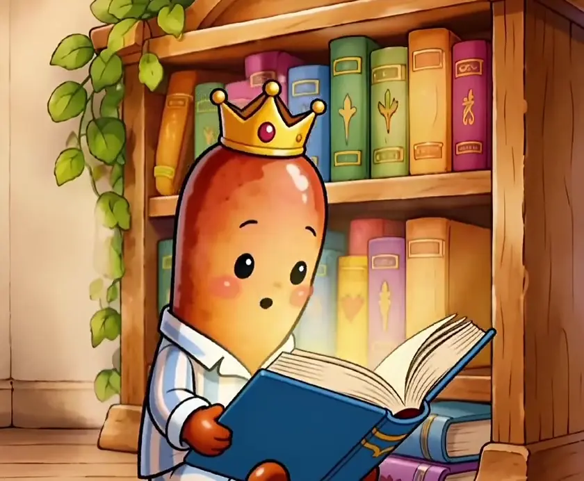

Zum Home-Bildschirm hinzufügen
Tippe in Safari auf „Teilen“ und dann auf „Zum Home-Bildschirm“. Aktiviere „Als Web-App öffnen“, falls die Option erscheint, und tippe auf „Hinzufügen“.

Tippe in Safari auf „Teilen“ und dann auf „Zum Home-Bildschirm“. Aktiviere „Als Web-App öffnen“, falls die Option erscheint, und tippe auf „Hinzufügen“.